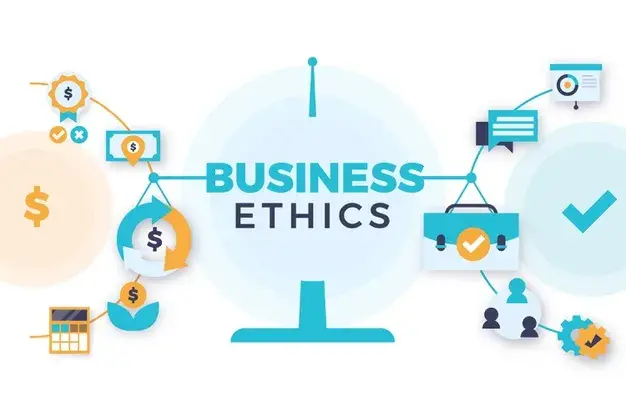

Introduction:-
In today's rapidly changing professional world, the significance of continuous skill
enhancement and professional development cannot be overstated. To thrive in this
environment, organisations must prioritise the growth and development of their
employees,
giving them a competitive advantage. This blog post will examine the essential
components
of a comprehensive skill enhancement and professional development program.
A comprehensive program starts with effective onboarding strategies that acclimate
new
employees to the organization's culture and expectations. Technical training equips
employees with the necessary knowledge and expertise to excel in their specific
roles.
Leadership development programs cultivate the skills needed to guide teams and drive
organizational success.
Additionally, sales techniques training helps employees master the art of persuasion
and
relationship-building. Compliance and ethics training ensures that employees
understand
legal and ethical obligations, reducing organizational risks. Soft skills, such
as
communication, teamwork, and problem-solving, enhance overall effectiveness
and
collaboration
By embracing these components, organizations create a culture of continuous
learning
and
growth, fostering personal and professional development for their employees.
This
investment in skill enhancement and professional development not only benefits
individuals
but also drives organizational success in today's dynamic business landscape.
( Find your burning business problem's solution here... )
1. Onboarding Strategies for Skill Development :-
A well-executed onboarding process is crucial for laying the groundwork for skill
enhancement and professional growth within an organization. To achieve this,
companies
should implement a structured onboarding program that acquaints new employees with
company policies, procedures, and culture. By designating a dedicated
onboarding
team,
clear responsibilities can be assigned, ensuring that all aspects of the onboarding
process
are properly handled.
Comprehensive training should be a key component of the onboarding program. This
training should encompass not only job-specific skills but also an understanding of
the
organization's goals, values, and vision. By aligning the onboarding process
with
the
company's overall objectives, new hires can better comprehend their role within the
organization and contribute more effectively.
Furthermore, a well-structured onboarding process helps new employees integrate into
the
company culture, fostering a sense of belonging and connection. By providing
them
with the
necessary tools and resources, companies enable new hires to thrive and excel in
their
roles.
In summary, a successful onboarding process is essential for creating a solid
foundation for
skill enhancement and professional growth. By establishing a structured program,
providing
comprehensive training, and aligning onboarding with organizational goals
and
values,
companies can ensure a seamless transition for new employees, setting them up for
success and fostering their ongoing development.
( Find your burning business problem's solution here... )
2. Technical Training and Skill Building
:-
In today's digital age, technical fluency has become crucial for individuals and
organizations
alike. To ensure their workforce remains proficient in their roles, organizations
must prioritize
providing relevant technical training to employees, tailored to their job functions.
This training
encompasses a wide range of skills, from general IT knowledge to industry-specific
technical
aspects.
Continuous training plays a vital role in keeping employees updated with the latest
advancements in technology and industry practices. It enables them to adapt to
changing
trends, optimize their performance, and contribute effectively to their
organizations. By
investing in technical training, organizations can equip their employees with the
necessary
skills to navigate the digital landscape and leverage technological tools for
improved
productivity and innovation.
However, technical expertise alone is not always sufficient for success in today's
professional environment. Leadership development programs can complement technical
training by enhancing employees' soft skills, such as communication,
problem-solving, and
decision-making abilities. This holistic approach to employee development fosters
well-rounded professionals who can effectively lead teams, drive initiatives, and
adapt to the
dynamic demands of the modern workplace.
In conclusion, providing continuous technical training and incorporating leadership
development programs are essential strategies for organizations to empower their
employees, stay competitive, and thrive in the digital age.
( Find your burning business problem's solution here... )
3. Sales Techniques and Customer Service Training :-
Effective sales techniques and excellent customer service are vital for the success
of any
business. To achieve this, organizations should prioritize investing in
comprehensive training
programs that enhance sales skills, including prospecting, relationship-building,
negotiation,
and utilizing CRM tools. Equipping employees with these essential skills can
significantly
impact their ability to generate leads, foster meaningful connections with
customers, close
deals, and efficiently manage customer relationships through technology.
Furthermore, customer service training plays a crucial role in ensuring customer
satisfaction
and building lasting rapport. Employees should be trained in actively listening to
customers,
empathizing with their concerns, and providing effective solutions to
problems. By
focusing
on problem-solving skills, employees can turn potential complaints into
opportunities for
exceptional service.
When organizations invest in training their employees in sales techniques and
customer
service, they empower them to become valuable assets. Skilled employees contribute
to
customer loyalty by providing memorable experiences, cultivating positive
relationships, and
exceeding customer expectations. Ultimately, this dedication to customer
satisfaction drives
organizational growth and success.
( Find your burning business problem's solution here... )
4. Compliance and Ethics Training :-

Compliance with regulations and ethical conduct is of utmost importance in the modern
business landscape. Organizations must prioritize the establishment of comprehensive
training programs that encompass various critical topics. These programs should
cover
areas such as anti-discrimination policies, data privacy, code of conduct, and
industry-specific regulations.
By implementing robust compliance training, organizations ensure that employees
possess a
clear understanding of their responsibilities and are equipped to uphold legal and
ethical
standards. This training helps safeguard the organization and its stakeholders from
potential
risks and adverse consequences.
Anti-discrimination policies educate employees on the importance of treating all
individuals
fairly and without prejudice, fostering a diverse and inclusive work environment.
Data privacy
training equips employees with knowledge on how to handle sensitive information
securely,
reducing the risk of data breaches and privacy violations. Code of conduct training
establishes guidelines for professional behavior, promoting integrity and ethical
decision-making within the organization.
Furthermore, industry-specific compliance training ensures that employees are
well-versed
in the regulations and requirements specific to their field, preventing
non-compliance and
potential legal issues.In summary, comprehensive compliance training programs are
vital for organizations to
ensure that employees understand their responsibilities and adhere to legal and
ethical
standards. By investing in such training, organizations can protect their
reputation, mitigate
risks, and foster a culture of integrity and compliance.
5. Soft Skills Development :-

Soft skills are essential for personal and professional advancement as they
significantly
impact one's growth. Among these vital traits, communication skills, teamwork,
time
management, problem-solving, and adaptability hold great value. To
facilitate
employees in
developing these skills, organizations should offer various opportunities such as
workshops,
seminars, and online courses. Enhancing soft skills has a positive impact on overall
productivity, as it fosters effective collaboration and promotes individual growth.
Effective communication skills enable individuals to convey their ideas, thoughts,
and
concerns clearly, fostering better understanding and minimizing
misunderstandings.
Teamwork allows for a cohesive and harmonious work environment, where individuals
collaborate and leverage each other's strengths to achieve common goals. Time
management.skills ensure tasks are completed efficiently, meeting deadlines
and
reducing
stress. Problem-solving abilities enable employees to identify and resolve
challenges
creatively, contributing to innovative solutions. Finally, adaptability helps
individuals navigate
through changes and challenges, ensuring they can embrace new technologies,
processes,
and work environments effectively.
By providing avenues for employees to develop these skills, organizations can foster
a
positive and growth-oriented work culture. Moreover, employees who possess strong
soft
skills tend to be more motivated, engaged, and resilient, contributing to their
overall
professional success.
( Find your burning business problem's solution here... )
Conclusion :-
Skill enhancement and professional development are indispensable in today's
competitive
landscape. By implementing a comprehensive approach that encompasses effective
onboarding strategies, technical training, leadership development, sales techniques,
customer service training, compliance and ethics, and soft skills development,
organizations
can empower their employees to thrive. Investing in the growth of employees not only
benefits individuals but also contributes to the success and sustainability of the
organization
as a whole. Embrace the journey of continuous improvement, and unlock the full
potential of
your workforce.
Frequently Asked Questions
1. How important is the onboarding process for skill development and professional
growth?
The onboarding process is crucial for establishing a solid foundation for
skill
development and professional growth within an organization. It helps new
employees
understand company policies, procedures, and culture, aligning them with
organizational
goals and values. By providing comprehensive training and fostering a sense
of belonging,
onboarding sets new hires up for success and ongoing development.
2. What is the significance of technical training in the digital age?
Technical training is vital in the digital age to ensure employees remain
proficient in their
roles. It equips them with the necessary skills to navigate the digital
landscape, adapt to
changing trends, and leverage technological tools for improved productivity
and innovation.
Additionally, complementing technical training with leadership development
programs
enhances employees' soft skills, making them well-rounded professionals who
can
effectively lead teams and thrive in today's dynamic workplace.
3. How can sales techniques and customer service training benefit a business?
. Comprehensive sales techniques and customer service training can
significantly impact
a business's success. Sales training enhances skills such as prospecting,
relationship-building, negotiation, and utilizing CRM tools, enabling
employees to generate
leads, close deals, and manage customer relationships efficiently. Customer
service training
focuses on active listening, problem-solving, and providing effective
solutions, fostering
customer satisfaction and building lasting rapport. Skilled employees
contribute to customer
loyalty, positively impacting organizational growth and success.
4. Why is compliance and ethics training important for organizations?
Compliance and ethics training are essential for organizations to uphold
legal and ethical
standards. These training programs cover various critical topics, such as
anti-discrimination
policies, data privacy, code of conduct, and industry-specific regulations.
By ensuring
employees understand their responsibilities and adhere to these standards,
organizations
safeguard their reputation, mitigate risks, and foster a culture of
integrity and compliance.
6. How can I ensure compliance with tax laws and regulations?
Soft skills development programs, including communication, teamwork, time
management, problem-solving, and adaptability, play a vital role in personal
and professional
advancement. Enhancing these skills through workshops, seminars, and online
courses
fosters effective collaboration, better understanding, improved
productivity, and innovative
solutions. Strong soft skills promote a positive work culture, motivate
employees, and
contribute to their overall professional success by enabling them to
navigate changes and
challenges with resilience.